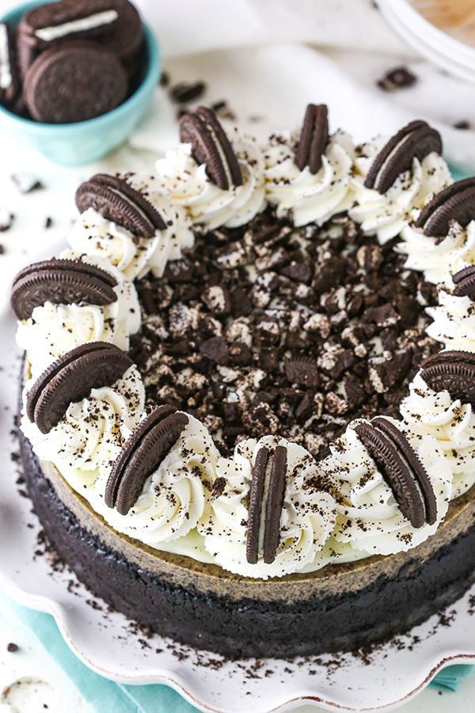

Oreo Cheesecake Recipe

For cookies and cream fanatics, there’s nothing better than Oreo cheesecake. This cheesecake is baked in an Oreo
crust and topped with white chocolate ganache, whipped cream, and even more Oreos.
Ingredients:
Crust
- Oreos
- Unsalted Butter
Filling
- Cream Cheese
- Sugar
- All purpose flour
- Sour Cream
- Vanilla Extract
- Eggs
- Oreos
White Chocolate Ganache
- White Chocolate Chips
- Heavy Whipping Cream
- Oreos
Whipped Cream
- Heavy whipping Cream
- Powdered Sugar
- Vanilla Extract
- Oreos

Steps:
How To Make Crust
- Prep your tools. Preheat oven to 325°F (163°C). Line a 9-inch (23cm) springform pan with parchment paper in the bottom and grease the sides.
- Assemble the crust. Combine the crust ingredients in a small bowl. Press the mixture into the bottom and up the sides of the springform pan.
- Bake the crust for 8-10 minutes. Then set aside to cool.
- Prep for baking. Cover the outside of the pan with aluminum foil so that water from the water bath cannot get in (see how I prepare a pan for a water bath). Set prepared pan aside.
Make the Oreo Cheesecake Filling
- Adjust temp. Reduce oven temperature to 300°F (148°C).
- Combine cream cheese, sugar and flour. In a large bowl, beat the cream cheese, sugar and flour on low speed until well completely combined and smooth. Be sure to use low speed to reduce the amount of air added to the batter, which can cause cracks. Scrape down the sides of the bowl.
- Add the sour cream and vanilla extract. Mix on low speed until well combined.
- Add the eggs one at a time. Mix slowly to combine after each addition. Scrape down the sides of the bowl as needed to make sure everything is well combined.
- Add Oreos. Gently stir the Oreo crumbs into the filling
Assemble The Oreo Cheesecake
Now lets put everything together
- Pour a third of the cheesecake filling into the crust. Spread evenly.
- Add Oreos. Top it with half of the quartered Oreos.
- Add another third of the cheesecake filling. Spread evenly, then the other half of the Oreos.
- Top the cheesecake with the remaining filling. Spread into an even layer. It should be a thick enough layer to keep the Oreos from floating to the top.
Try not to jostle the cheesecake around too much, or the Oreos will come to the surface. You want to avoid that so that you don’t end up with cracks in the top of your cheesecake. If some Oreos or air bubbles surface, use a toothpick to push down the Oreos and pop the bubbles.
Bake, Then Chill Your Cheesecake
- Set up the water bath. Place the springform pan with your cheesecake inside another larger pan. Fill the outside pan with enough warm water to go about halfway up the sides of the springform pan. The water should not go above the top edge of the aluminum foil on the springform pan.
- Bake for 1 hour and 20 minutes. The center should be set, but still jiggly.
- Turn off the oven and leave the door closed for 30 minutes. The cheesecake will continue to cook, but slowly begin to cool as well.
- Crack the door of the oven for 30 minutes. This allows the cheesecake to continue to cool slowly. This process helps prevent cracking.
- Chill. Remove the cheesecake from the oven and water bath wrapping and refrigerate until firm, 5-6 hours or overnight.
- Place on serving dish. Remove the cheesecake from the springform pan and place on a serving dish.
Make the Ganache & Whipped Cream, Then Decorate
- Place the white chocolate chips in a medium heat-proof bowl.
- Heat the heavy cream. Just until it begins to boil.
- Pour the hot cream over the white chocolate chips. Allow to sit for 2-3 minutes, then whisk until smooth. If not completely melted and smooth, heat in 10 second increments, stirring between each until fully melted.
- Allow the ganache to cool a bit (about 5 minutes, until thickened but still pourable and spreadable), then pour the ganache onto the top of the cheesecake and spread evenly.
- Make the whipped cream. Add the heavy whipping cream and powdered sugar to a large mixer bowl. Whip on high speed until stiff peaks form.
- Pipe the whipped cream onto the top outer edge of the cheesecake. I used Ateco tip 844.
- Decorate. Finish the cheesecake off by adding additional chopped Oreos to the center of the cheesecake and an Oreo half to piped whipped cream swirls.
- Refrigerate until ready to serve. Cheesecake is best for 4-5 days.
Enjoy
Click to Go Back